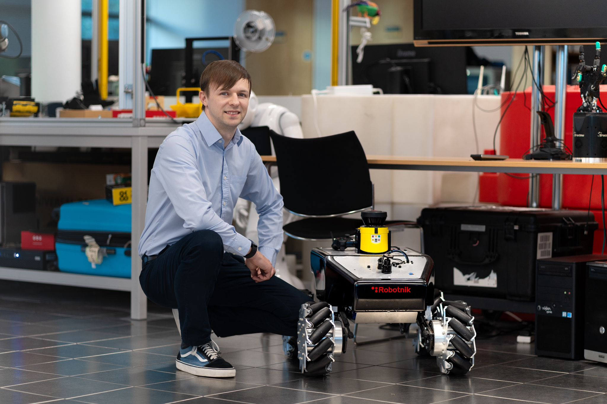
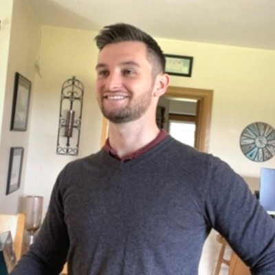
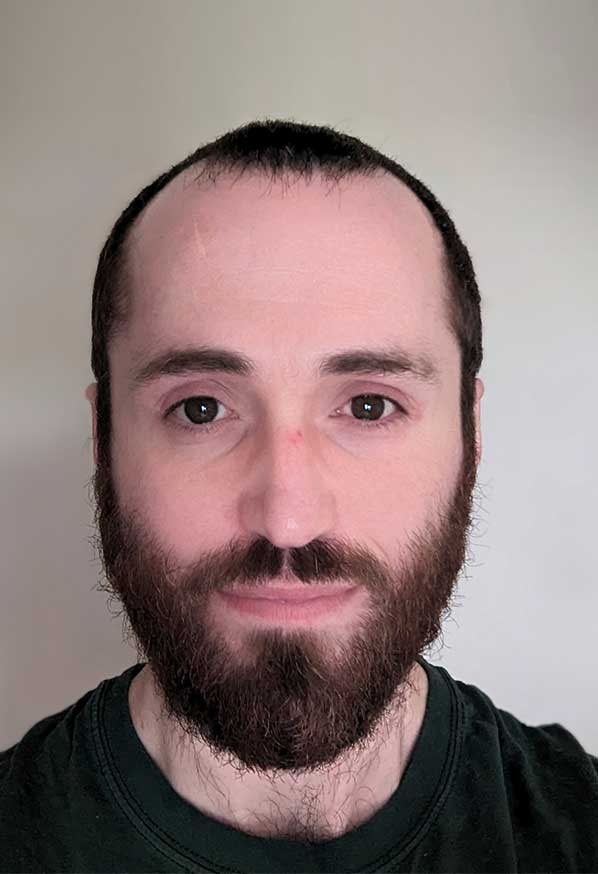

Intelligent Systems Research Centre
Ulster University (Derry~Londonderry Campus)
Seminar Series
Seminars usually take place from 12.30-1.30pm on Wednesdays in person the MS building board room (MS105) and/or streamed online via Microsoft Teams. Contact Cian O'Donnell or Louise Gallagher for more information.
Seminar archives: 2023/24, 2022/23.
Spring 2025
1.30pm 22/01/25
MS Teams link for seminarKyle Madden (ISRC, UU)
Spiking Neural Networks for Detecting Denial-of-Service Attacks in Networks-on-Chip
Modern computing systems consist of numerous computing cores, necessitating fast and accurate inter-core communication to maintain high performance. Networks-on-Chip (NoC), inspired by packet-switched computer networks, have emerged as a reliable communication paradigm for on-chip components. However, NoCs are vulnerable to various security threats, including spoofing, side-channel attacks, eavesdropping, and Denial-of-Service (DoS) attacks, which can significantly degrade device performance. While some circuit modifications can be identified during the design phase, no universal detection approach exists. Detecting these attacks within the NoC is crucial to prevent disruptions in critical functionality. This research explores the advancements and challenges in NoC architectures, with a focus on implementing third-generation Artificial Spiking Neural Network-based systems (SNNs) for the detection of DoS attacks in NoCs.
David Simpson (ISRC, UU)
Fault Detection in Microprocessors (RISC-V) using Spiking Neural Networks
Reliability of microprocessors used in safety critical applications such as space exploration is vital and mechanisms are required to ensure execution safety during runtime. These mechanisms must be carefully evaluated to avoid adding overheads to the design, e.g. increased power consumption and area utilisation. This talk presents a novel and brain-inspired technique that utilises Spiking Neural Networks (SNNs) as classifiers to detect hardware faults which affect the microprocessors architecture. In-person seminar.
12.30pm 05/02/25: William Smyth (ISRC, UU)
MS Teams link for seminarWebpage
Dr. William Smyth is a Senior Lecturer (Associate Professor) in Mathematics at the School of Computing, Engineering, and Intelligent Systems at Ulster University. He holds a degree in Mathematics and a PhD in Theoretical Physics from Queen's University Belfast. Dr. Smyth's research interests focus primarily on the application of machine learning in finance and, to a lesser extent, advancements in quantum computing. He has published in leading journals across physics, finance, and economics. This presentation will provide a high-level overview of recent work conducted in collaboration with former Economics Nobel Prize winner, Harry M. Markowitz.
A Novel Squeezing Technique for Noise Reduction in Association Matrices
We introduce a novel technique, termed squeezing, designed to manipulate noisy data for improved estimation of association matrices, including correlation, covariance, similarity, and distance matrices. Squeezing parametrizes statistical distributional alignment to vectorize co-movement noise, enabling a more robust and objective-specific determination of the covariance matrix. Our model-free approach facilitates a more comprehensive exploration of the eigenspace of the estimated matrix. While introduced in the context of investment portfolio optimization, the technique is broadly applicable across a range of machine learning paradigms where accurate matrix estimation is critical. Empirical results demonstrate that squeezing outperforms industry-standard methods for addressing noise in financial covariance matrices.
12.30pm 19/02/25: Xinming Shi (Queen's University Belfast)
MS Teams link for seminarWebpage
Dr. Xinming Shi is an Assistant Professor at Queen's University Belfast. She earned her Ph.D. in Computer Science from the University of Birmingham, UK, in 2023. Her research is dedicated to brain-inspired intelligence, including neuromorphic computing hardware and software, evolutionary learning, and trustworthy brain-inspired systems. She is a 2024 recipient of the Leverhulme Early Career Fellowship from the Leverhulme Trust. Dr. Shi has published extensively in top journals and conferences, including IEEE TNNLS, IEEE TC, IEEE TETCI, and ACM Transactions. She is a member of SIGEVO, part of the Conference Activities and Communications Subcommittee of the IEEE Computational Intelligence Society (CIS), and a Youth Editor of Intelligent Control. Additionally, she has served on various committees and as a reviewer for leading journals and conferences.
Evolutionary Brain-Inspired Computing Systems Based on Memristors
As Moore's Law approaches its physical limits, traditional computing architectures encounter significant bottlenecks, particularly the von Neumann bottleneck in data-intensive applications. My research introduces an evolutionary brain-inspired computing system utilizing memristors to overcome these challenges. This innovative approach draws inspiration from both the brain and nature to forge an adaptive and efficient architecture, incorporating basic units, functional modules, and a next-generation spiking neural network. By integrating principles of evolutionary computing, this system enhances its reliability, explainability, and robustness. This work aims to revolutionize intelligent computing, ushering in a new era of trustworthy and efficient solutions.
12.30pm 05/03/25: James Connolly (ISRC, UU)
MS Teams link for seminar
Webpage
Dr. James Connolly is a Senior Lecturer in the School of Computing, Engineering, and Intelligent Systems at Ulster University. He specialises in Big Data, Artificial Intelligence, Digital Healthcare, and Connected Health. Dr. Connolly's research focuses on the integration of wearable technology and artificial intelligence to enhance healthcare outcomes. He is also the co-founder of ActionSense, a company dedicated to developing customised wearable devices that monitor patients at home, aiding in their rehabilitation. This presentation provides a high-level overview of recent work in healthcare-related research.
Digital technologies in healthcare
Digital technologies are transforming healthcare by enhancing diagnostic accuracy, improving patient outcomes, and increasing the efficiency of healthcare delivery. This presentation will explore the broad scope of digital healthcare, including health information technology (IT), and artificial intelligence (AI). A significant focus will be on sensors and wearable devices, which monitor vital signs and provide continuous health data. Inertial Measurement Unit (IMU) sensors, which are critical for tracking movement, will be discussed, along with an analysis of typical sensor movement data. The talk will then delve into specific research studies that highlight the impact of wearable technologies in healthcare, demonstrating their potential to improve patient care and disease management.
9.30am 14/03/25: Alice Smith (Auburn University, USA)
MS Teams link for seminarWebpage
Google Scholar
ALICE E. SMITH is the Joe W. Forehand, Jr. Distinguished Professor of the Industrial and Systems Engineering Department at Auburn University, where she served as Department Chair from 1999-2011. She also has a joint appointment with the Department of Computer Science and Software Engineering. Previously, she was on the faculty of the Department of Industrial Engineering at the University of Pittsburgh from 1991-99, which she joined after industrial experience with Southwestern Bell Corporation. Dr. Smith has technical degrees from Rice University, Saint Louis University, and Missouri University of Science and Technology along with a B.A. in Spanish from Auburn University (2022).
Dr. Smith’s research focus is analysis, modeling, and optimization of complex systems with emphasis on computation inspired by natural systems. She holds one U.S. patent and several international patents and has authored more than 200 publications which have garnered over 17,500 citations, an H Index of 50, and an i10 Index of 126 (Google Scholar). Dr. Smith is on the top half of the List of Top 2% of Scientific Researchers worldwide compiled by Stanford University based on publishing impact. Her books include Women in Computational Intelligence: Key Advances and Perspectives on Emerging Topics and Women in Industrial and Systems Engineering: Key Advances and Perspectives on Emerging Topics, both published by Springer. Several of her papers are among the most highly cited in their respective journals including the most cited paper of Reliability Engineering & System Safety and the 4th most cited paper of IEEE Transactions on Reliability. She won the E. L. Grant Best Paper Awards in 1999 and in 2006, and the William A. J. Golomski Best Paper Award in 2002. Dr. Smith is the Editor in Chief of INFORMS Journal on Computing and an Area Editor of Computers & Operations Research.
Evolutionary Strategies for Design of Engineered Systems
This presentation will put forth several straightforward but successful implementations of an often-overlooked evolutionary algorithm - evolutionary strategies, ES - for the design of complex systems. ES was developed more than 50 years ago for optimizing engineering design problems in continuous space and is characterized by its simplicity and computational efficiency. There are few tunable parameters in the basic version and the search relies on the evolution of a population through mutation only, where mutation is a Gaussian which adapts automatically to the search history. Such simplicity is appealing for both algorithm development and implementation and tends to result in a robust search. The three engineering design problems showcased in this talk are diverse and two of them are bi-objective optimized to identify a Pareto set of non-dominated designs. The applications are (1) the design of an airfoil for a flying drone considering drag and lift, (2) the location of semi-obnoxious facilities in municipalities considering transport costs and social costs, and (3) the design of large order picking warehouses considering travel distance.
This talk will give a brief overview of some of the exciting and impactful research endeavors in computational intelligence by women led investigative teams from around the world. The work is taken from the 2022 landmark volume Women in Computational Intelligence: Key Advances and Perspectives on Emerging Topics. The 34 authors of this book are nearly all women and represent thirteen countries across five continents. All chapters are authored by IEEE Women in Computational Intelligence members except the first chapter which is a professional biography of computer pioneer Admiral Grace Hopper by Jill S. Tietjen, an esteemed author on women and technology. The book is structured into four main sections of Intelligence, Learning, Modeling, and Optimization. The primary technical methods include artificial neural networks, evolutionary and swarm computation, and fuzzy logic and systems. The wealth of applications can be seen throughout the nineteen chapters within this volume. These include natural language processing, intelligent tutoring, autonomous systems, digital pathology, intrusion detection, and energy management. A unique part of this book is the biographies of the authors which include information concerning their beginnings and advancement in computational intelligence research along with advice for those considering this field and its possibilities. In-person seminar.
12.30pm 19/03/25: Barry Dillon (ISRC, UU)
MS Teams link for seminar
Webpage
Google Scholar
Inspire HEP
Dr. Barry Dillon is a lecturer in mathematics at the Intelligent Systems Research Centre (ISRC) within the School of Computing, Engineering and Intelligent Systems, Ulster University (UU).
With a background in particle physics, his main area of research is on how machine-learning can be used to enhance physics analyses at the Large Hadron Collider (LHC) experiment. Particularly on how these machine-learning techniques can be used to aide in the search for signatures of new particles in the data collected at the LHC.
Barry did his PhD in theoretical physics at the University of Sussex and held postdoctoral positions at the University of Plymouth (UK), the Jozef Stefan Institute (Slovenia), and at the University of Heidelberg (Germany). In this time he has worked on many topics in Beyond the Standard Model (BSM) physics, strong-field QED, particle phenomenology, and machine-learning.
Machine-Learning at the Large Hadron Collider
Machine-Learning (ML) is an important tool in physics analyses at the Large Hadron Collider (LHC) experiment, and modern deep-learning tools are making a big impact in how the LHC data is analysed. The focus of the talk will be on the deep-learning tools that are being developed for the analyses, with a brief overview of the LHC experiment and what it's measuring.
12.30pm 02/04/25: John E Ward (Spire)
MS Teams link for seminarSpire website
John E holds a Ph.D. in Experimental Astrophysics from University College Dublin and has over six years of post-doctoral research experience working on ground-based gamma-ray telescopes in Arizona and La Palma, as well as cosmic-ray balloon experiments in the Swedish Arctic and Antarctica.
Transitioning from academia, he has worked for Spanish and Irish space start-ups in diverse disciplines from systems engineering and project management to business and product development, developing nanosatellites and avionics systems for launchers and ESA scientific missions.
Currently at Spire, he leads strategic R&D developments across the technical stack, focusing on long-term technology advancement for future success and competitive advantages.
Spire Global: Advancing Weather, Climate, and Security from Space
Spire Global leverages its advanced satellite constellation to revolutionize weather forecasting, climate monitoring, and global security. By capturing and analyzing vast amounts of Earth and atmospheric data, Spire enhances predictive capabilities for extreme weather events, supports climate resilience efforts, and strengthens maritime and aviation security. This presentation will explore how Spire's cutting-edge technology-powered by radio occultation, AIS, and other satellite-derived insights provides real-time, actionable intelligence for governments, businesses, and research institutions.
12.30pm 30/04/25: Kaniska Samanta & Manjurul Islam
MS Teams link for seminarKaniska Samanta (ISRC, UU)
Google Scholar
Transferable Brain-Computer Interfacing based Status Monitoring System to Augment Motor Imagery based Neurorehabilitation
Motor imagery-based brain-computer interfaces (MI-BCIs) have shown promising results in supporting neurorehabilitation, particularly for individuals recovering from motor impairments. However, prolonged use of MI-BCIs can lead to mental fatigue, which significantly affects user engagement and system performance. In this project, we are developing a Transferable Brain-Computer Interfacing based Status Monitoring System, designed to continuously assess the mental fatigue levels of users during MI-based neurorehabilitation sessions. The system employs non-invasive M/EEG recordings and leverages domain-adaptable machine learning techniques to detect neural signatures of mental fatigue in real-time, ensuring robustness across individual variability and session-wise shifts. By integrating fatigue monitoring into the BCI loop, the proposed framework enables dynamic adaptation of task difficulty and/or rest periods to maintain optimal user performance and comfort. This closed-loop system has the potential to enhance the efficacy of MI-based neurorehabilitation by sustaining user engagement, personalizing therapy, and preventing cognitive overload.
Manjurul Islam (ISRC, UU)
Google Scholar
M. M. Manjurul Islam is a Postdoctoral Research Associate at the Intelligent Systems Research Centre (ISRC) within the School of Computing, Engineering and Intelligent Systems at Ulster University (UU).
With a background in computer science and engineering, Manjurul's research focuses on advancing smart manufacturing through computing, modelling, and AI-driven solutions that enhance efficiency, reliability, and cognitive maintenance. At Ulster University, he is part of the Smart Nano NI project, where he develops and applies AI techniques such as deep learning, optimisation, digital twins, and data analytics to address challenges in semiconductor manufacturing, including process optimisation, tool health monitoring, and intelligent automation. He received his Ph.D. in Computer Engineering from the University of Ulsan (South Korea), where his research on fault diagnosis and prognosis using advanced signal processing and brain-inspired computing contributed to improving the operational safety of rotating machinery. He previously worked as a Postdoctoral Researcher at the Digital Industry Centre of Fondazione Bruno Kessler (Italy), where he developed diagnostic and prognostic tools for intelligent manufacturing systems, and also served as an Assistant Professor at American International University-Bangladesh.
Model- and Data-Driven Decision Support for Complex Engineering Systems
This presentation introduces a decision support framework for fault diagnosis and predictive maintenance in complex engineering systems. The research objective is to integrate physics-based modelling with data-driven learning to monitor system health, detect faults early, and estimate the remaining useful life (RUL) of critical components. The framework employs advanced signal and image processing techniques to extract meaningful patterns from sensor data. These features are further refined using evolutionary algorithms and information theory-based optimisation to enhance the precision of diagnostic decisions. For RUL forecasting, a statistical learning-based prognostic model-built on Bayesian inference and empirical degradation modelling-provides probabilistic predictions while accounting for uncertainties in operational data. The effectiveness of the proposed approach is demonstrated through case studies involving a micro-nano fabrication cleanroom air treatment system, rotating machinery, and semiconductor wafer defect recognition.
1.30pm 14/05/25: Aditya Japa (ISRC, UU)
Google Scholar
Aditya Japa received a Ph.D. degree in ECE, from Dr. SPM IIIT Naya Raipur, Chhattisgarh, India in 2021, with a focus on Emerging Technologies for Hardware security. After his Ph.D., he worked as a Research Fellow with the Centre for Secure Information Technologies, EEECS Department, Queen's University, Belfast, U.K. Currently he is working as Lecturer in School of Computing, Engineering and Intelligent Systems, Ulster University, Derry, U.K. He has co-authored one book entitled "Introduction to Microelectronics to Nanoelectronics: Design and Technology" (CRC Press, Nov. 2020). His research mainly focuses on Hardware and System Security. Specifically, he is into the design of PUF and TRNG design. He worked on emerging/beyond CMOS-based security strategies, power side-channel analysis, and countermeasures. His current research interests include the design of Intrinsic PUFs for approximate computing and security in/for approximate computing.
Security of Approximate Neural Networks against Power Side-channel Attacks
Emerging low-energy computing technologies, in particular approximate computing, are becoming increasingly relevant in key applications. A significant use case for these technologies is reduced energy consumption in Artificial Neural Networks (ANNs), an increasingly pressing concern with the rapid growth of AI deployments. It is essential we understand the security implications of approximate computing in an ANN context before this practice becomes commonplace. In this work, we examine the test case of approximate ANN processing elements (PE) in terms of information leakage via the power side channel. We perform a weight extraction correlation Power Analysis (CPA) attack under three approximation scenarios: overclocking, voltage scaling, and circuit level bitwise approximation. We demonstrate that as the degree of approximation increases the Signal to Noise Ratio (SNR) of power traces rapidly degrades. We show that the Measurement to Disclosure (MTD) increases for all approximate techniques. An MTD of 48 under precise computing is increased to at minimum 200 (bitwise approximate circuit at 25% approximation), and under some approximation scenarios >1024. i.e. an increase in attack difficulty of at least x4 and potentially over x20. A relative Security-Power-Delay (SPD) analysis reveals that, in addition to the across the board improvement vs precise computing, voltage and clock scaling both significantly outperform approximate circuits with voltage scaling as the highest performing technique.
28/05/25: Faisal Jamil (ISRC, UU)
Bio to follow.Title TBA
Abstract TBA In-person seminar.
12.30pm 11/06/25: Monika Jadi (Yale University, USA)
Webpage
Google Scholar
Monika Jadi obtained her Ph.D. in Neuroengineering at the University of Southern California and did her postdoctoral training at the Salk Institute for Biological Studies in the Computational Neurobiology Laboratory. At Yale, she is an Assistant Professor in the Departments of Psychiatry and Neuroscience.
The current focus of her lab is using computational modeling as well as data modeling tools such as machine learning to study computations, information flow, temporal dynamics of population codes and role of neuromodulation in canonical columnar circuits of the cortex.
Title TBA
Abstract TBA
Autumn 2024
11/09/24: Vimal Dwivedi (ISRC, UU)

Webpage
Google Scholar
Vimal Dwivedi earned his PhD in Computer Science and Engineering from Tallinn University of Technology, Tallinn, Estonia, in May 2022, with a project sponsored by the Qtum Foundation, Singapore. During his doctoral research, he developed a smart contract language (See his Ph.D. thesis) aimed at facilitating the development of error-free blockchain applications. Currently, he holds a position as a Lecturer in Data Analytics at Ulster University. Before this role, he was lecturer in Computer Science at Teesside University, England and prior to this role, he contributed as a Postdoctoral Research Associate in the School of Electronics, Electrical Engineering, and Computer Science (EEECS) at Queen's University Belfast (QUB), Northern Ireland, United Kingdom. There, he worked on a project titled "Digital Twin and Blockchain for Business Decision Modeling" in ARC research group with the collaboration with PwC Belfast, Northern Ireland. His research interest includes Blockchain Systems, Digital Identity, Web 3.0, Digital Twins.
Utilising blockchain and digital twin for supply chain resiliency
In today's dynamic and interconnected global economy, supply chain resilience is paramount to ensuring continuity and mitigating disruptions. This talk explores the innovative integration of blockchain technology and digital twin models to enhance supply chain resilience. Blockchain provides a decentralized and immutable ledger that ensures transparency, traceability, and security across all supply chain processes, while digital twins offer real-time, virtual representations of physical assets, enabling predictive analytics and scenario planning. By combining these technologies, organisations can achieve a more responsive and adaptive supply chain, capable of withstanding disruptions and optimising performance. The talk outlines the key benefits of this integration, including enhanced visibility, improved risk management, and greater operational efficiency, and discusses potential challenges and future directions for research in this evolving field. Through case studies and simulations, this talk demonstrate the practical applications and value of utilizing blockchain and digital twin technologies in creating a resilient supply chain infrastructure.
1pm 26/09/24: Mark Ng (School of Engineering, UU Belfast)
MS Teams link for seminar
Webpage
I received the BEng (Hons) in Electrical and Computer Systems Engineering and the Ph.D. in Fault Diagnosis and Control System from Monash University in 2006 and 2009, respectively. I am currently a Senior Lecturer in Mechatronics Engineering and Control at the School of Engineering, Ulster University, UK, and I am attached to the Nanotechnology and Integrated BioEngineering Centre (NIBEC). My research interests include fault diagnosis, mathematical modelling, digital twin, and data analytics for anomaly detection and classification.
Digital Twin of a Vehicular Engine as a Simulation Environment Platform for Fault Diagnosis
Fault diagnosis in highly nonlinear dynamic systems, such as vehicle engines, has garnered significant attention, particularly with the automotive industry's shift towards autonomous driving technologies. This seminar presents a comprehensive model-based digital twin testbed of a turbocharged spark-ignited (TCSI) petrol engine system for testing and evaluating residuals generation and fault diagnosis methods. Developed using Matlab/Simulink, the testbed provides a user-friendly graphical interface to simulate engine behavior and to visualize engine telemetries under various industrial-standard driving cycles, including the Worldwide Harmonized Light Vehicle Test Procedure (WLTP), New European Driving Cycle (NEDC), Extra-Urban Driving Cycle (EUDC), and U.S. Environmental Protection Agency Federal Test Procedure (FTP75).
The Interface allows the designer to Induce one of eleven specific faults, facilitating a deeper understanding of their impact on engine performance without risking permanent damage or reduced engine lifespan. This simulation testbed offers an invaluable platform for researchers and automotive engineers to generate essential data, fostering the development and comparison of current and emerging fault diagnosis methodologies for automotive engine systems.
This seminar will cover the following topics:
- Modeling and Control of the TCSI Petrol Engine
- Establishing the Classification and Types of Faults of Interest
- Design of Residuals for Fault Detection
- Fault Isolation
- Design of the Digital Twin Simulation Environment
- Other Digital Twin-related Research Activities
12.30pm 09/10/24
MS Teams link for seminarValentina Gogulancea (ISRC, UU)

Webpage
I have a background in mathematical modelling and hold a PhD in Chemical Engineering from University Politehnica of Bucharest. My first postdoc position was in Newcastle University, working to establish a mathematical modelling strategy to better understand the bacterial processes in wastewater treatment. I joined Ulster University as a Research Associate in 2020, in the Centre for Sustainable Technologies, where I employed mathematical and economic modelling to evaluate clean energy production technologies. I joined the School of Computing in 2023 as a data scientist on the LUCIA project and I'm currently working to develop GeoAI models able to predict individual and population-level lung cancer risk using electronic health records and socio-environmental data.
AI, healthcare and geography: understanding lung cancer risk factors beyond smoking.
After a brief overview of my work with individual based models for bacterial biofilm formation, I will give a short introduction to the LUCIA - LUng Cancer-related risk factors and their Impact Assessment - project. Lung cancer is the second most diagnosed cancer and the leading cause of cancer death worldwide. Early detection is paramount to improve patient outcomes, but current lung cancer screening is costly and underdeveloped. Similarly, while the link between developing lung cancer and smoking is well established, the contribution of other factors such as indoor and outdoor pollution, co-morbidities, genetics and biological pathways is under-researched. The talk will discuss the role of explainable GeoAI (AI models that use geospatial data and output geospatial predictions) in healthcare research, the current limitations of GeoAI techniques and future research directions. The link between environmental and socio-economic conditions and lung cancer incidence will be highlighted, using examples from literature and preliminary results from the LUCIA project.
Alex Brennan (ISRC, UU)

PhD Researcher at Ulster University focusing on Virtual Reality and Games for Rehabilitation.
A Pilot Study on the User Experience of Different Upper Body Extended Reality Physiotherapy Interventions.
The implementation of Extended Reality (XR) technology into physiotherapy settings has shown promising outcomes across various patient groups, with user experience playing a key role in determining how well these approaches are accepted in both home and clinical settings. This presentation will explore how XR physiotherapy interventions impact user experience. Six participants took part in a study with three stages. In Stage 1, participants watched a physiotherapy video on a computer, while Stages 2 and 3 used a Meta Quest 3 headset, with Stage 2 introducing ghosting as an additional guide, and Stage 3 adding both visual and auditory feedback after exercises. Data was collected using questionnaires and interviews to measure user experience and mental workload, showing stage 3 had the highest mental workload and the most satisfaction. Participants preferred the XR stages for better focus and enjoyment, highlighting XR's potential to improve engagement in physiotherapy.
3pm 06/11/24: Carsen Stringer (HHMI Janelia Research Campus, USA)
MS Teams link for seminar
Webpage
Research group webpage
Carsen Stringer is a group leader at HHMI Janelia Research Campus. Our lab records from populations of ~50,000 neurons simultaneously using two-photon calcium imaging. We use machine learning techniques to investigate the structure of the recorded activity, either in response to external stimuli such as virtual reality, or in response to the animal's own actions.
Unsupervised pretraining in biological neural networks
Representation learning in neural networks may be implemented with supervised or unsupervised algorithms, distinguished by the availability of feedback. In sensory cortex, perceptual learning drives neural plasticity, but it is not known if this is due to supervised or unsupervised learning. Here we recorded populations of up to 90,000 neurons simultaneously from the primary visual cortex (V1) and higher visual areas (HVA), while mice learned multiple tasks as well as during unrewarded exposure to the same stimuli. Similar to previous studies, we found that neural changes in task mice were correlated with their behavioral learning. However, the neural changes were mostly replicated in mice with unrewarded exposure, suggesting that the changes were in fact due to unsupervised learning. The neural plasticity was concentrated in the medial HVAs and obeyed visual, rather than spatial, learning rules. In task mice only, we found a ramping reward prediction signal in anterior HVAs, potentially involved in supervised learning. Our neural results predict that unsupervised learning may accelerate subsequent task learning, a prediction which we validated with behavioral experiments.
10am 14/11/2024: Jaehyeok Doh (Gyeongsang National University, South Korea)
MS Teams link for seminar
Dr. Jaehyeok Doh (J. Doh) is currently an Associate Professor and holds a major chair in the School of Aerospace Engineering at Gyeongsang National University in South Korea. He is also the Director of Industry-Academic Collaboration at the Korean Society of Mechanical Engineers (KSME) and the Information Director at the Korean Reliability Society (KORAS) Dr. J. Doh earned his Ph.D. in Mechanical Engineering from Yonsei University, South Korea, in 2018. After completing his doctoral studies, he worked as a postdoctoral researcher at the Singapore University of Technology and Design (SUTD) for two and a half years. His research interests encompass design optimization, uncertainty quantification, reliability assessment, machine learning and deep learning applications, additive manufacturing, digital twins, and prognostics and health management.
Digital Twin-Based Artificial Intelligence-Augmented Generative Design Optimization under Uncertainty: Application to the Design of Engineering Materials and Structures
This seminar provides an overview of recent design paradigms in engineering materials and structures under various uncertainties by employing artificial intelligence-assisted optimization techniques. A generic design optimization is introduced from both deterministic and stochastic viewpoints. Moreover, we will briefly introduce some case studies related to engineering material design and structural design using various deep learning techniques, as well as ongoing studies regarding a digital twin platform for Unmanned Air Mobility (UAM) and collaborative robot arm applications. The topics of the case studies are as follows: 1) Reliability-based robust design optimization of polymer nanocomposites to enhance percolated-electrical conductivity. 2) Machine learning-based prediction of the remaining useful life for engineering materials. 3) VAE-CGAN- based generative design of unstructured dampers with metal additive manufacturing to satisfy seismic performance. 4) Deep learning-based reliability assessment of mechanical neural network lattice structure-based robot finger structures. 5) Basic implementation of a digital twin system for Unmanned Air Mobility (UAM) and collaborative robot arms. Based on these case studies, in future collaborative research work, we are expected to carry out the research to maintain and improve the surface quality of products which is wire arc additive manufacturing more effectively.
12.30pm 20/11/2024: Bin Xue (FinTrU)
MS Teams link for seminar
Extracting KYC requirements from Financial documents
This presentation delves into the practical application of machine learning within a real-world business context. It begins with a detailed problem definition, addressing the challenges faced and the evolution of the solution approach. The workflow across the entire pipeline is then examined, with an emphasis on the rationale behind key decisions. Additionally, the use of large language models is explored, along with potential future developments in this domain.